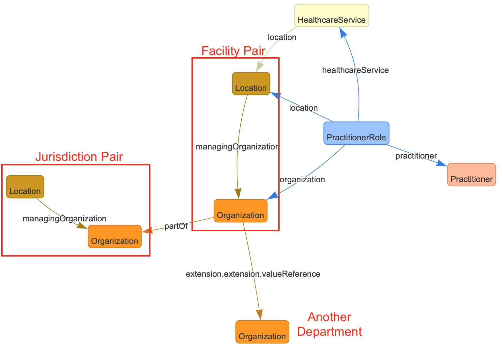
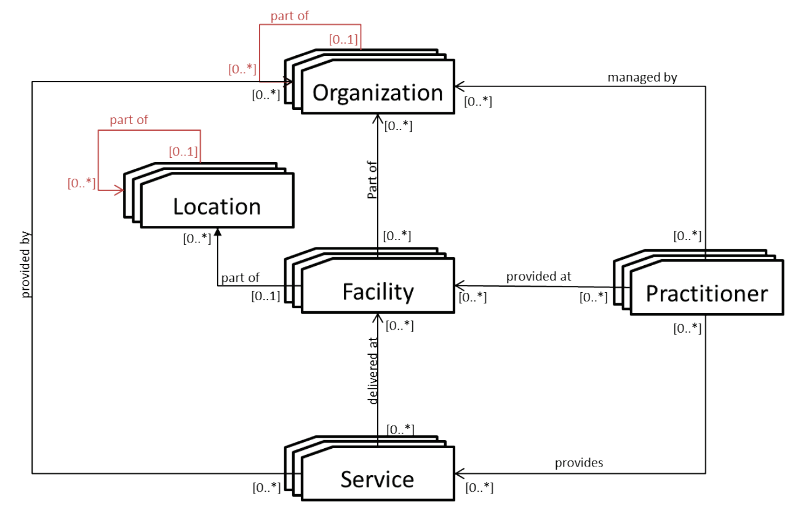

Basics of mCSD¶
A guiding tenant of the evolving FHIR standard is that 80% of interoperability use cases should be satisfied out-of-the-box by any combination of the more than 130 base resources. Profiles may be created from the base resources to address diverse use cases, such as domain-specific ones like oncology, specific deployments like a patient identity registry, and local requirements such as incorporating legal definitions of marital status and race into data dictionaries. A simple use case, like a case report, up to a large use case like adapting FHIR to an entire country healthcare system, may be profiled from the base FHIR resources. Aspects of consent, security, and privacy are also embodied in profiles.
Integrating the Healthcare Enterprise (IHE) supports the open, consensus-driven development of profiles for FHIR resources and other healthcare specifications. The profiling of base resources for use cases are increasingly specified in machine-computable FHIR Implementation Guides (IGs). The terms 'profile' and 'implementation guide' may be used interchangeably, though profiles for FHIR are increasingly being specified in Implmentation Guides.
The mCSD profile describes four entities and how they exchange information and work together. Here are the key takeaways about them.
mCSD Facility (Location and Organization)¶

First, it is important to say that we often think of health facilities as a single concept, such as physical sites such as hospitals, clinics, health outposts, physician offices, etc. In this way of thinking, a facility has a unique identifier, geographic attributes (address, geocode), contact attributes, attributes regarding its hours of operation, etc.
But, in FHIR there is no single facility resource, rather each Facility is defined by a pairing of FHIR Location and FHIR Organization. All of the attributes required can be included, but there is no 'Facility' FHIR resource.
A mCSD facility is defined as a FHIR Location + FHIR Organization pair
The key takeaway is that when thinking of a health facility, there no single FHIR resource, instead it is represented in FHIR as a Location and Organization resource pair.
- Location are physical places where care can be delivered such as facilities, buildings, wards, rooms, or vehicles. Locations also include political administrative units such as a village districts or regions. A Location has a unique identifier and may have geographic attributes (address, geocode), attributes etc. Each Location may be related to one Organization. A location may have a hierarchical relationship with other locations.
Locations only relate to one organization
The key takeaway is that a FHIR Location doesn't have enough details to describe the management side of the facility and that's where Organization comes in.
- Organization are "umbrella" entities; these may be considered the administrative bodies under whose auspices care services are provided such as Healthcare Information Exchanges (HIEs), Integrated Delivery Networks (IDNs), Non-Government Organizations (NGOs), Faith-Based Organizations (FBOs) or even a one-physician family practice. An organization has a unique identifier and may have additional administrative attributes such as contact person, mailing address, etc. Departments of an institution, or other administrative units, may be represented as child Organizations of a parent Organization.
Organizations can have more than hierarchy, but not Locations
Organizations are powerful representaions, they can have more than one hierarchy in mCSD. (This requires a mCSD extension to the core FHIR spec.)
-
OrganizationAffiliation describe non-hierarchical relationships, such as participation in a HIE.
-
*mCSD Jurisdictions are also the pairing of a Location and Organization. However, they do not directly provide care, rather than are authoritative entities.
FHIR Healthcare Services and Practitioners¶
- HealthcareService – Each healthcare service has a unique identifier. Examples include surgical services, antenatal care services, or primary care services. The combination of a Healthcare Service offered at a Location may have specific attributes including contact person, hours of operation, etc.
Think of health workers and the services they and the Locations providing them separately
- Practitioner are health workers; a Practitioner might be a physician, nurse, pharmacist, community health worker, district health manager, etc. Practitioners have contact and demographic attributes. Each Practitioner may be related to one or more Organizations, one or more Locations and one or more Healthcare Services.
!!! tip "Practitioners' skillsets (Practitioner Roles) and Practitioners themselves are separate.
How mCSD entities relate to one another¶
The following graphic borrowed directly from the mCSD profile shows the relationships between entities.
- The concept of a facility is really a Location and an Organization.
- Organizations and Locations may be
partOfother Locations and Organizations. - Services are provided by Organizations but delivered at 'Facilities'.
- Practitioners and Locations have a
managingOrganization.
